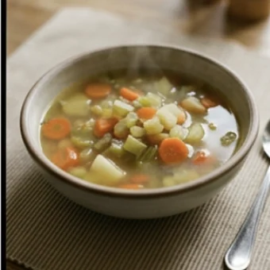

deutschoderwas · Sprechclub · Woche 5 · Strang A · Teil 2 · Mittwoch, 14. Oktober
Im Restaurant: bestellen — und sagen, wenn etwas nicht stimmt
Bestellen können die meisten. Schwierig wird es erst, wenn das Essen kalt ist, die Rechnung nicht stimmt oder man seit zwanzig Minuten wartet. Dann schlucken viele es herunter — nicht aus Höflichkeit, sondern weil die Sätze fehlen. Heute holen wir sie uns.
Dein Niveau
Gleiche Situationen, andere Sätze. Wechsle jederzeit — probier ruhig beide Seiten aus.
Der Moment, in dem man nichts sagt
Das Essen kommt, es ist lauwarm. Du schaust auf den Teller, dann zur Bedienung — und sagst: „Danke, alles gut.“ Fast jeder kennt diesen Moment. Er liegt nicht am Charakter, sondern an drei fehlenden Sätzen.
Wie oft gehst du essen?
Was bestellst du meistens?
Hast du schon mal etwas zurückgehen lassen?
Warum fällt es vielen so schwer, im Restaurant etwas zu sagen?
Beschwert man sich in deinem Land direkter oder vorsichtiger als hier?
Wann ist eine Beschwerde berechtigt — und wann nur Nörgeln?
🔑 Die Formel für heute:Freundlich anfangen + sachlich sagen, was ist + einen Wunsch nennen.„Entschuldigung — die Suppe ist leider kalt. Könnten Sie sie noch mal warm machen?“ Drei Teile, und die Sache ist erledigt.
Reklamieren ist nicht unhöflich
In Deutschland gilt eine sachliche Reklamation als völlig normal — die Bedienung erwartet sie sogar. Unhöflich wird es nicht durch was du sagst, sondern durch wie: laut, vorwurfsvoll oder erst hinterher bei der Bewertung im Internet.
Sagst du lieber sofort etwas oder gar nichts?
Was würdest du machen, wenn das Essen kalt ist?
Wie viel Trinkgeld gibt man bei euch?
Ist es fairer, sofort etwas zu sagen oder hinterher eine Bewertung zu schreiben?
Woran merkst du, ob jemand sich beschwert oder nur meckert?
Gibt es Situationen, in denen man besser nichts sagt?
💡 Der Unterschied, der alles entscheidet: Sag, was ist, nicht wer schuld ist. „Die Suppe ist kalt“ ist eine Beobachtung, auf die jemand reagieren kann. „Sie haben mir eine kalte Suppe gebracht“ ist ein Vorwurf — und darauf reagiert man mit Verteidigung, nicht mit einer neuen Suppe.
Zwölf Wörter vom Tisch bis zur Rechnung
Sagt jedes Wort laut — mit Artikel. Und gleich einen Satz hinterher: In welchem Moment im Restaurant brauchst du dieses Wort?
die Bedienung
„Ich frage kurz die Bedienung.“
💡 So rufst du sie: „Entschuldigung!“ und Blickkontakt. Nie „Herr Ober!“ — das sagt heute niemand mehr, das klingt wie aus einem alten Film.
reservieren
„Ich habe einen Tisch für vier Personen reserviert.“
💡 Am Telefon sagst du drei Dinge in einem Satz: Wann, für wie viele, auf welchen Namen.Freitag um acht, für vier Personen, auf den Namen Weber.

die Vorspeise
„Als Vorspeise nehme ich die Suppe.“
💡 Die Reihenfolge auf jeder Karte: Vorspeise — Hauptgericht — Nachtisch. Du musst nicht alles bestellen; ein Hauptgericht allein ist völlig normal.
das Hauptgericht
„Als Hauptgericht hätte ich gern den Braten.“
💡 Oft steht dahinter noch „mit Beilage nach Wahl“ — dann fragt die Bedienung: Möchten Sie Kartoffeln, Reis oder Salat dazu? Die Beilage kennst du schon von Montag.
das Getränk
„Möchten Sie schon ein Getränk bestellen?“
💡 Diese Frage kommt fast immer zuerst, noch bevor du die Karte gelesen hast. Eine gute Antwort, die Zeit kauft: „Ein stilles Wasser bitte, das Essen entscheide ich gleich.“
die Rechnung
„Wir würden gern zahlen, die Rechnung bitte.“
💡 In Deutschland bringt man die Rechnung nicht von allein — du musst darum bitten. Sonst sitzt du und wartest, und die Bedienung denkt, du willst noch bleiben.
getrennt
„Wir zahlen getrennt, bitte.“
💡 Die Frage kommt immer: „Zusammen oder getrennt?“ Getrennt zu zahlen ist hier völlig normal und macht niemandem Umstände — sag es einfach, bevor gerechnet wird.
das Trinkgeld
„Machen Sie bitte zweiundzwanzig.“
💡 Üblich sind fünf bis zehn Prozent. Man legt es meistens nicht hin, sondern rundet beim Zahlen auf: Die Rechnung ist 20,40 € — du sagst „Machen Sie zweiundzwanzig.“
dauern
„Entschuldigung, wie lange dauert es noch?“
💡 Achte auf das Subjekt: Es dauert — nicht ich dauere. Und für die höfliche Nachfrage reicht: Können Sie mal schauen, wo unser Essen bleibt?
verwechseln
„Ich glaube, da wurde etwas verwechselt.“
💡 Der freundlichste Satz überhaupt, wenn etwas falsch ist: „Da ist wohl etwas verwechselt worden.“ So sagst du, was los ist, ohne jemandem die Schuld zu geben.
stimmen
„Ich glaube, die Rechnung stimmt nicht ganz.“
💡 stimmen ist das wichtigste Wort bei jeder Reklamation: Das stimmt nicht. Da stimmt etwas nicht. Stimmt so! Das letzte heißt: Der Rest ist Trinkgeld.
sich beschweren
„Ich möchte mich nicht beschweren, aber das Essen ist kalt.“
💡 Immer mit sich und mit bei + Person, über + Sache: Ich beschwere michbei der Bedienung über das Essen.
💡 Spiel „Das ist mir passiert“: Einer nennt ein Problem im Restaurant — Suppe kalt, Rechnung falsch, falsches Gericht, kein Besteck, zu lange gewartet. Der Nachbar sagt sofort den passenden höflichen Satz. Wer länger als drei Sekunden braucht, gibt weiter.
Reklamieren, sich beschweren, meckern — was denn nun?
Alle drei heißen ungefähr „sagen, dass etwas nicht gut ist“. Aber sie wirken völlig verschieden — und nur eines davon bringt dir eine neue Suppe.
🧾
reklamieren
sachlich, mit einem Anspruch — du willst eine Lösung
Ich möchte das reklamieren: Das Gericht war kalt.
🗣️
sich beschweren
du sagst, dass du unzufrieden bist — offen, aber ruhig
Ich möchte mich über den Service beschweren.
🌧️
meckern
dauernd nörgeln, ohne etwas zu wollen — klingt unangenehm
Er meckert über jedes Restaurant.
✅ So sagt man es
Entschuldigung, die Suppe ist leider kalt.
Warum das funktioniertDu sagst nur, was ist. Darauf kann die Bedienung reagieren, ohne sich zu verteidigen — und in neun von zehn Fällen kommt eine warme Suppe.
❌ So besser nicht
Sie haben mir eine kalte Suppe gebracht.
Das ProblemSie haben … macht die Person zum Verursacher. Das ist ein Vorwurf, und Vorwürfe beantwortet man mit Widerspruch statt mit einer Lösung.
✅ So sagt man es
Könnten Sie das bitte noch mal prüfen?
Warum das funktioniertKönnten Sie ist eine Bitte, keine Forderung — und noch mal prüfen lässt offen, dass vielleicht du dich irrst. Damit verliert niemand das Gesicht.
❌ So besser nicht
Das ist falsch, rechnen Sie das neu.
Das ProblemZwei Behauptungen im Befehlston. Selbst wenn du recht hast, wird die Bedienung erst mal dagegenhalten — und du brauchst länger als mit einer Frage.
✅ So sagt man es
Ich hätte gern noch ein Wasser, bitte.
Warum das funktioniertIch hätte gern ist die Standardform beim Bestellen — höflich, kurz, immer richtig. Du kennst sie schon aus Woche 1.
❌ So besser nicht
Ich will noch ein Wasser.
Das ProblemIch will klingt im Deutschen hart, fast wie ein Kind. Erwachsene sagen ich hätte gern, ich nehme oder ich möchte.
Drei Teile, immer in dieser Reihenfolge — dann klingt es nie nach Streit:
Ein freundliches Wort zuerst:Entschuldigung … oder Tut mir leid, aber …
Was ist, ohne Schuld:… das Essen ist kalt statt … Sie haben es kalt gebracht.
Ein Wunsch, keine Forderung:Könnten Sie …?Wäre es möglich, …?
Und der Zauberzusatz:leider. Es macht jeden Satz weicher, ohne ihn schwächer zu machen.
Ein Satz für alle Fälle, den du auswendig können solltest: „Entschuldigung, das ist leider nicht ganz das, was ich bestellt habe — könnten Sie das bitte noch mal prüfen?“
🎯 Zu zweit, eine Minute: Einer sagt einen Vorwurfssatz — „Sie haben das Falsche gebracht!“ Der andere formt ihn sofort um, sodass er höflich klingt. Danach tauschen.
Vier Bausteine, und der Abend läuft
Ankommen, bestellen, nachfragen, zahlen. Für jeden Moment ein fertiger Satz — den Rest macht ein Lächeln.
1 · 🚪 Ankommen Wir haben reserviertEin Tisch für zwei, bitteIst hier noch frei?auf den Namen …
So klingt esGuten Abend, wir haben auf den Namen Weber reserviert.
So klingt esIch hätte gern die Suppe und danach den Braten.
3 · ❓ Nachfragen Was ist da drin?Ist das scharf?Was empfehlen Sie?Gibt es das auch ohne …?
So klingt esEntschuldigung, ist da Fleisch drin?
4 · 💳 Zahlen Zahlen bitteZusammen oder getrenntStimmt soKann ich mit Karte zahlen?
So klingt esWir würden gern zahlen — getrennt, bitte.
1 · 🚪 Ankommen, ohne Reservierung Hätten Sie noch einen Tisch frei?Wie lange müssten wir warten?Wir kämen auch später wiederGinge auch draußen?
So klingt esHätten Sie zufällig noch einen Tisch für zwei, oder wie lange müssten wir warten?
2 · 📖 Bestellen mit Wunsch Wäre es möglich, … wegzulassen?Könnte ich statt … lieber …?Nur eine kleine Portion, bitteDas eine Mal ohne …
So klingt esWäre es möglich, die Soße wegzulassen? Ich vertrage das nicht so gut.
3 · ⚠️ Reklamieren Da ist wohl etwas verwechselt wordenDas ist leider nicht das, was ich bestellt hatteKönnten Sie das noch mal prüfen?Es tut mir leid, aber …
So klingt esEntschuldigung, da ist wohl etwas verwechselt worden — ich hatte den Fisch bestellt.
4 · 🤝 Die Lösung annehmen Das ist sehr nett, dankeKein Problem, das kann passierenDann warte ich gernDas wäre super
So klingt esKein Problem, das kann passieren — dann warte ich gern die paar Minuten.
Verb das Gericht die Bestellung Höflichkeit
📣 Sofort anwenden: Geh die vier Momente einmal durch und sag zu jedem einen Satz — ankommen, bestellen, nachfragen, zahlen. Vier Sätze, und du kommst durch jeden Restaurantbesuch.
Vier Situationen — zwei Runden
Runde 1: Lest den Dialog zu zweit laut. Runde 2: Klappt die Zeilen zu und spielt ihn frei — mit eurem eigenen Problem.
Dialog 1 · „Bestellen mit einer Nachfrage“
Ihr sitzt am Tisch, die Bedienung kommt. Du willst wissen, was in einem Gericht ist, bevor du bestellst.
A
Haben Sie schon gewählt?
B
Fast. Eine Frage noch: Ist bei Nummer sieben Fleisch dabei?
🗣️ Fast kauft dir zwei Sekunden. Und die Frage direkt hinterher, ohne lange Einleitung.tippen = Hilfe zeigen
A
Nein, das ist rein vegetarisch. Nur Gemüse und Käse.
B
Perfekt, dann nehme ich das. Und als Beilage bitte Kartoffeln.
🗣️ dann nehme ich — kurz und normal beim Bestellen. Die Beilage gleich mit, sonst wird gefragt.tippen = Hilfe zeigen
A
Sehr gern. Und zu trinken?
B
Ein stilles Wasser, bitte. Groß.
🗣️ still oder mit Kohlensäure — die Frage kommt sonst gleich hinterher.tippen = Hilfe zeigen
A
Kommt sofort.
B
Danke schön.
🗣️ Zwei Wörter, und der Ton für den ganzen Abend steht.tippen = Hilfe zeigen
Dialog 2 · „Das falsche Gericht“
Das Essen kommt — aber es ist nicht das, was du bestellt hast. Du sagst es freundlich und sofort.
A
Einmal der Braten, bitte sehr.
B
Entschuldigung — ich glaube, da ist etwas verwechselt worden. Ich hatte den Fisch bestellt.
🗣️ Ich glaube und verwechselt worden: Du sagst, was ist, ohne jemanden zu beschuldigen.tippen = Hilfe zeigen
A
Oh, das tut mir leid. Ich schaue sofort nach.
B
Kein Problem. Wie lange dauert es ungefähr?
🗣️ Kein Problem nimmt die Spannung raus. Und dann die praktische Frage — du musst ja planen.tippen = Hilfe zeigen
A
Ungefähr zehn Minuten. Möchten Sie so lange etwas trinken? Geht aufs Haus.
B
Das ist sehr nett, danke. Dann warte ich gern.
🗣️ aufs Haus heißt: kostenlos. Und ein freundliches Ja darauf gehört dazu.tippen = Hilfe zeigen
A
Sehr gern. Es kommt gleich.
B
Danke, dass Sie das so schnell regeln.
🗣️ Ein Satz am Ende, der etwas anerkennt — der kostet nichts und wirkt sehr.tippen = Hilfe zeigen
Dialog 3 · „Es dauert zu lange“
Ihr wartet seit über einer halben Stunde. Andere Tische, die später kamen, haben schon ihr Essen.
B
Entschuldigung, könnten Sie mal schauen, wo unser Essen bleibt?
🗣️ So fängt jede gute Nachfrage an: könnten Sie mal schauen — eine Bitte, kein Vorwurf.tippen = Hilfe zeigen
A
Natürlich. Was hatten Sie bestellt?
B
Zweimal die Nummer vier. Wir warten jetzt etwa vierzig Minuten.
🗣️ Die Zeit als Zahl nennen, nicht als Gefühl. Ewig kann man diskutieren, vierzig Minuten nicht.tippen = Hilfe zeigen
A
Das ist zu lang, das stimmt. Ich frage sofort in der Küche.
B
Danke. Wenn es noch lange dauert, müssten wir leider gehen — wir haben um acht einen Termin.
🗣️ müssten und leider: Du sagst eine unangenehme Sache, ohne zu drohen. Und du gibst einen Grund.tippen = Hilfe zeigen
A
Verstehe. Ich sage Ihnen in zwei Minuten Bescheid.
B
Das wäre super, danke.
🗣️ Das wäre super — freundlich, kurz, und der Ton bleibt gut.tippen = Hilfe zeigen
Dialog 4 · „Die Rechnung stimmt nicht“
Auf der Rechnung steht ein Getränk, das ihr nicht bestellt habt. Du sagst es ruhig, bevor du zahlst.
B
Wir würden gern zahlen, bitte. Getrennt.
🗣️ Getrennt gleich beim Bitten um die Rechnung sagen — hinterher wird es umständlich.tippen = Hilfe zeigen
A
Gern. Das macht bei Ihnen achtzehn achtzig.
B
Einen Moment — hier stehen drei Wasser, wir hatten aber nur zwei. Könnten Sie das noch mal prüfen?
🗣️ Einen Moment hält den Vorgang an. Dann die Zahlen nennen und mit einer Frage schließen.tippen = Hilfe zeigen
A
Oh, Sie haben recht. Entschuldigung, dann sind es sechzehn fünfzig.
B
Kein Problem, danke. Machen Sie bitte achtzehn.
🗣️ Machen Sie achtzehn ist die normale Art, Trinkgeld zu geben — du nennst den Betrag mit Trinkgeld.tippen = Hilfe zeigen
A
Vielen Dank, und einen schönen Abend noch.
B
Danke, ebenfalls. Es hat sehr gut geschmeckt.
🗣️ ebenfalls für „Ihnen auch“. Und ein Lob am Schluss — das bleibt hängen.tippen = Hilfe zeigen
🎭 Und jetzt ihr: Spielt Dialog 2 mit einem anderen Problem — das Besteck fehlt, das Glas ist schmutzig, das Essen ist versalzen. Wer reklamiert, muss alle drei Teile bringen: freundlich anfangen, sachlich sagen, was ist, einen Wunsch nennen.
🧩 Höflich sagen, was man will: hätte, wäre, könnte, würde
Vier Wörter, und jeder Satz klingt sofort freundlich. Sie sind der Grund, warum eine Reklamation auf Deutsch angenehm statt unangenehm klingt.
Im Deutschen macht man einen Wunsch höflich, indem man ihn ein Stück von der Wirklichkeit wegrückt — man sagt nicht Ich will, sondern Ich hätte gern. Dafür gibt es vier kleine Formen, die du fertig lernen kannst: hätte (von haben), wäre (von sein), könnte (von können) und würde (für alles andere). Mehr brauchst du für diese Stunde nicht — und ehrlich gesagt auch sonst selten.
🎁hätte = für WünscheIch hätte gern die Suppe.
▾
🚪wäre = für MöglichkeitenWäre es möglich, ohne Zwiebeln?
▾
🙏könnte = für BittenKönnten Sie das bitte prüfen?
▾
🔁würde = für alle anderen VerbenWir würden gern zahlen.
Wer?Ich
höfliche Formhätte
das kleine Wortgern
Was?die Suppe.
Die vier Formen in einer Zeile
Lies jede Zeile laut, bis sie von selbst kommt. Links das normale Wort, rechts die höfliche Form — mehr ist es nicht.
🔤
Der Umlaut ist das Signal
hatte → hätte, wurde → würde, konnte → könnte
Ich hätte gern. Ich würde gern.
➕
gern gehört fast immer dazu
ohne gern klingt es unfertig
Ich hätte gern … Wir würden gern …
❓
Als Frage wirkt es am stärksten
Verb nach vorn, und der Satz ist eine Bitte
Könnten Sie …? Wäre es möglich …?
ich habe → ich hätte gernes ist → es wäre möglichkönnen Sie → könnten Sieich will → ich würde gernwir zahlen → wir würden gern zahlenhaben Sie → hätten Sie zufällig
Der Bau einer Reklamation
Drei Teile, immer dieselbe Reihenfolge. Wenn du sie einmal auswendig kannst, funktionieren sie in jedem Laden, jedem Amt und jedem Restaurant.
🚫
Kein Sie haben
Schuld zuweisen bringt Widerspruch
Die Suppe ist kalt. — nicht: Sie haben …
🧊
leider macht alles weicher
und schwächt die Sache trotzdem nicht
Das ist leider nicht ganz richtig.
🎯
Immer mit einem Wunsch enden
sonst weiß niemand, was du willst
Könnten Sie das bitte tauschen?
1 · Freundlich anfangen → Entschuldigung, … · Tut mir leid, aber …2 · Sagen, was ist → Die Suppe ist leider kalt. · Hier stehen drei Wasser.3 · Einen Wunsch nennen → Könnten Sie …? · Wäre es möglich, …?Und der Weichmacher überall: leider, wohl, ein bisschen, nicht ganz
🧱 Bau die Sätze selbst
Tippe die Teile in der richtigen Reihenfolge an. Denk daran: In der höflichen Frage steht das Verb ganz vorne.
📖 Und jetzt im Zusammenhang
Ein Abend im Restaurant, an dem einiges schiefgeht — und trotzdem alle gut gelaunt bleiben. Wähle für jede Lücke das passende Wort.
Drei Fragen, und du hast die richtige Form:
Willst du etwas haben? → hätte. Ich hätte gern die Rechnung.
Fragst du, ob etwas geht? → wäre. Wäre das möglich?
Bittest du jemanden um etwas? → könnten. Könnten Sie mir helfen?
Steht ein anderes Verb im Satz? → würde + Verb am Ende. Ich würde gern zahlen.
Ein Satz zum Auswendiglernen, der drei davon enthält: „Ich hätte gern die Rechnung — und wäre es möglich, dass wir getrennt zahlen? Wir würden gern mit Karte bezahlen.“
🎭 Drei Situationen zu zweit
Einer ist Gast, einer ist Bedienung. Danach tauschen — und beim zweiten Mal ohne Notizen.
1 · Der ganz normale Abend
A ist Bedienung, B ist Gast. Spielt einen kompletten Besuch: ankommen, Getränk, bestellen, nachfragen, essen, zahlen. Nichts geht schief — es geht nur darum, dass alle Sätze sitzen.
Wir haben reserviertIch hätte gern …Was empfehlen Sie?Zahlen bitte, getrennt
Hätten Sie noch einen Tisch draußen?Wäre es möglich, das ohne Soße zu bekommen?Was ist heute besonders gut?Machen Sie bitte …
✅ Eine gute Runde enthältB hat alle vier Momente durchgespielt und dabei mindestens dreimal eine höfliche Form benutzt. A hat zweimal etwas gefragt, was Gäste wirklich gefragt werden.
2 · Drei Dinge gehen schief
A ist Bedienung und zieht nacheinander drei Zettel: falsches Gericht, kaltes Essen, falsche Rechnung. B muss jedes Mal reklamieren — freundlich, sachlich, mit einem Wunsch am Ende.
Das habe ich nicht bestelltDas Essen ist leider kaltDie Rechnung stimmt nichtKönnten Sie das bitte tauschen?
Da ist wohl etwas verwechselt wordenWäre es möglich, das noch mal warm zu machen?Hier steht ein Getränk zu vielKönnten Sie das noch mal prüfen?
✅ Eine gute Runde enthältBei jeder der drei Reklamationen kamen alle drei Teile vor: freundlicher Anfang, sachliche Beobachtung, konkreter Wunsch. Kein einziges Mal fiel der Satz Sie haben …
3 · Die schwierige Bedienung
A spielt eine Bedienung, die im Stress ist und erst mal abwehrt: „Das kann nicht sein.“ B bleibt freundlich, wiederholt sein Anliegen und findet einen Weg. Nach zwei Minuten wird abgebrochen — egal wie es steht.
Doch, ich hatte den Fisch bestelltKönnen Sie bitte noch mal schauen?Das ist kein Problem, aber …Ich warte gern
Ich verstehe, dass gerade viel los istTrotzdem würde ich Sie bitten, …Vielleicht können wir es so machen: …Gibt es jemanden, der da weiterhelfen kann?
✅ Eine gute Runde enthältB ist nicht lauter geworden und hat nicht aufgegeben. Er hat sein Anliegen mindestens zweimal wiederholt und dabei jedes Mal anders formuliert.
🎴 Sprechkarten
Zieh eine Karte und sprich mindestens vier Sätze am Stück.
Deine Aufgabe
Tippe auf den Knopf.
⏱️ Die 90-Sekunden-Challenge
Eine Situation, anderthalb Minuten, freies Sprechen. Nicht schön reden — sondern so, dass die Sache am Ende geregelt ist.
Dein Wort
die Bedienung
1:30
Geh die drei Teile entlang, dann trägt dich die Zeit von allein:
Wie fängst du an? Entschuldigung … / Tut mir leid, aber …
Was ist passiert? Das Essen ist … / Hier steht … / Wir warten seit …
Was wünschst du dir? Könnten Sie …? / Wäre es möglich, …?
Wie hört es auf? Das wäre super, danke. / Kein Problem, ich warte gern.
Und wenn dir das Wort fehlt: zeig darauf und sag „Das hier stimmt leider nicht.“ Ein Finger und ein Satz reichen völlig.
⏱️ Spielregel: In jeder Runde müssen mindestens zwei höfliche Formen (hätte, wäre, könnte, würde) und das Wort leider vorkommen. Der Partner zählt mit.
✅ Sitzt es schon?
8 Fragen. Tippe auf deine Antwort — die Erklärung kommt sofort.
✍️ Lückentext
Wähle in jeder Lücke das passende Wort.
📣 Danach laut: Jeder nennt reihum ein Problem im Restaurant. Der Nachbar antwortet sofort mit einem vollständigen Reklamationssatz — freundlicher Anfang, Beobachtung, Wunsch. Wer einen Teil vergisst, gibt weiter.
📮 Deine Hausaufgabe bis nächsten Montag
Vier kleine Aufgaben, zusammen etwa 25 Minuten. Nächste Woche geht es um Wetter und Kleidung — die höflichen Formen von heute brauchst du dort beim Umtauschen wieder.
💡 Warum das hilft:hätte, wäre, könnte, würde sind die vier Wörter, an denen man hört, ob jemand die Sprache benutzt oder sie beherrscht. Sie funktionieren im Restaurant genauso wie beim Amt, beim Vermieter und im Bewerbungsgespräch — es ist immer derselbe Baukasten.
0 von 0 Aufgaben geschafft.
So sieht ein vollständiger Reklamationssatz aus — drei Teile in einem Satz:
Entschuldigung, das Essen ist leider kalt — könnten Sie es noch mal warm machen?
Entschuldigung, bei mir fehlt leider das Besteck — könnten Sie mir eins bringen?
Entschuldigung, wir warten jetzt seit vierzig Minuten — könnten Sie mal nachschauen?
Entschuldigung, hier steht ein Getränk zu viel — könnten Sie das noch mal prüfen?
Entschuldigung, das ist nicht ganz das, was ich bestellt hatte — wäre ein Tausch möglich?
Ein einziger Test: Steht am Ende ein Wunsch? Ohne Wunsch ist es nur eine Klage, und niemand weiß, was er tun soll.
So formulierst du dasselbe Anliegen dreimal, ohne lauter zu werden:
Erster Versuch, freundlich: Entschuldigung, ich glaube, da ist etwas verwechselt worden.
Zweiter Versuch, konkreter: Ich hatte den Fisch bestellt — hier steht er auch auf der Rechnung.
Dritter Versuch, mit Weg: Könnten Sie kurz in der Küche nachfragen? Dann klärt sich das bestimmt.
Verständnis zeigen, ohne aufzugeben: Ich sehe, dass viel los ist — trotzdem würde ich Sie bitten, das zu prüfen.
Die letzte Stufe: Gibt es jemanden, der da weiterhelfen kann?
Der Trick ist nicht Härte, sondern Wiederholung mit neuen Worten. Wer dreimal dasselbe anders sagt, wirkt bestimmt — wer lauter wird, wirkt schwach.
📬 Abgabe: Schick deine beiden Sprachnachrichten bis Sonntagabend. Ich höre sie an und schicke dir zurück, an welcher Stelle du zu vorsichtig warst — das ist bei dieser Stunde der häufigste Punkt.
🔜 Nächste Woche, Teil 1:Wetter, Jahreszeit, Kleidung. Wetter beschreiben, sich anziehen — und am Mittwoch Kleidung kaufen, umtauschen und reklamieren. Die höflichen Formen von heute gehen direkt weiter.